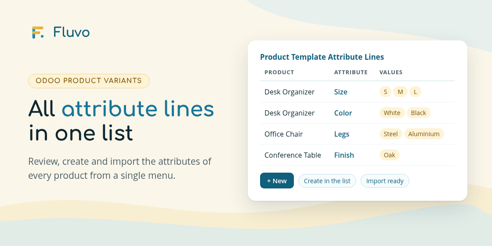
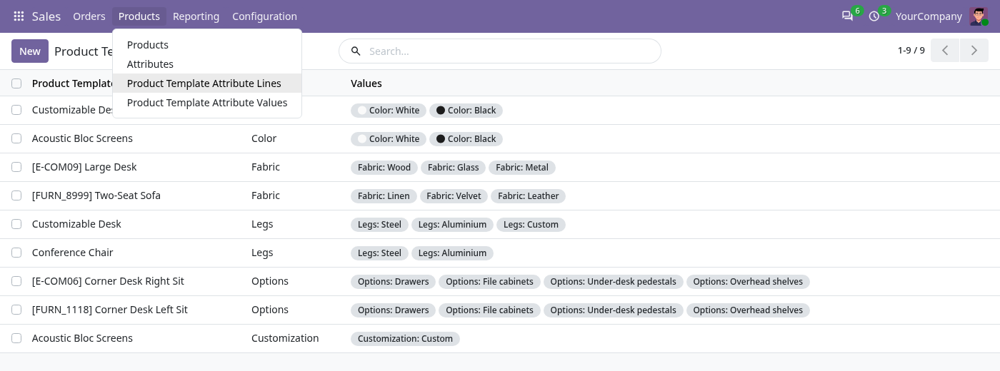
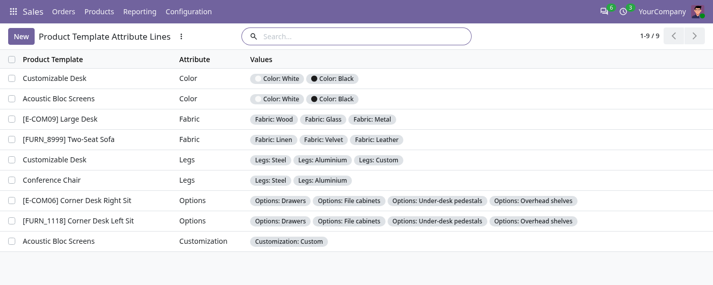

See which attributes and values every product has, and create or import them without opening each product.

Search, filter and group the attribute lines of all products, to check the variants of a whole catalogue at once.
The list allows creating records: add a line with New, or import the attributes of many products with Import records.
Install the module and the menu is there, next to the other product settings. No new models, no changes to your data.
Go to Sales > Products > Product Template Attribute Lines. The menu is shown once Variants is enabled in the settings.

One line per attribute of a product template, with its values.
Export the list, or import it back with the
product_tmpl_id, attribute_id and
value_ids columns.
